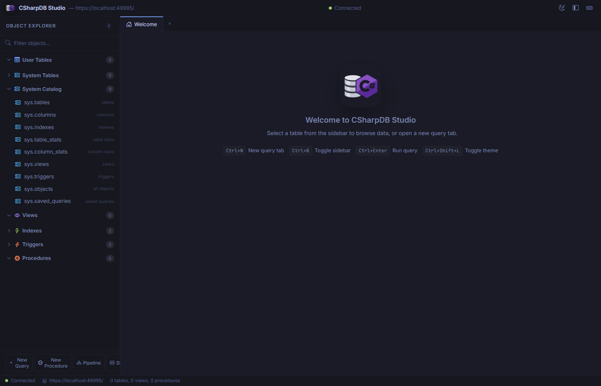
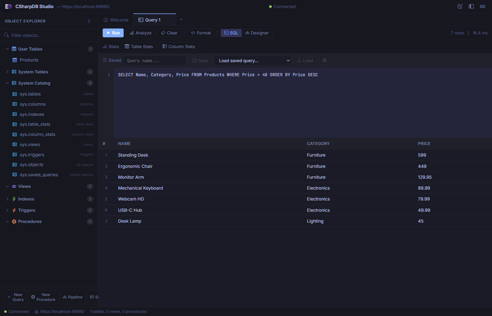
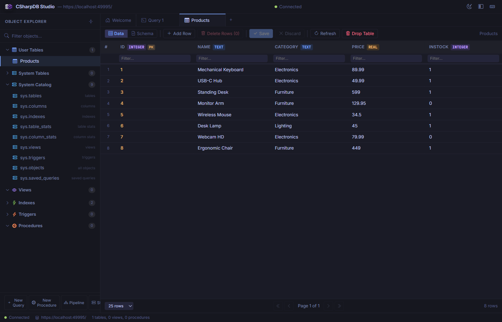
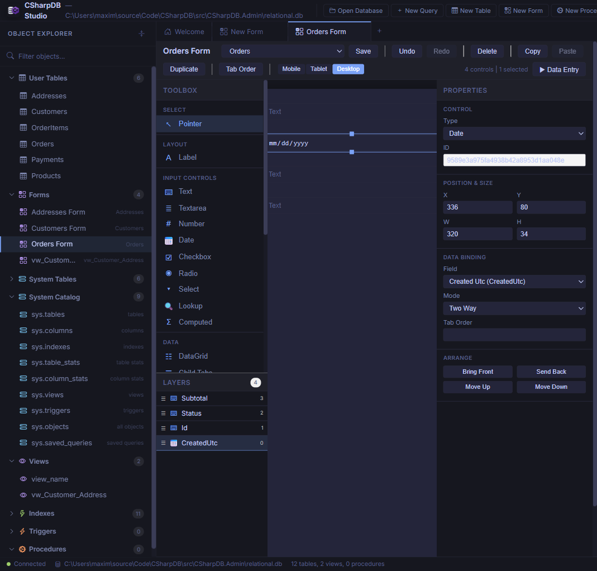
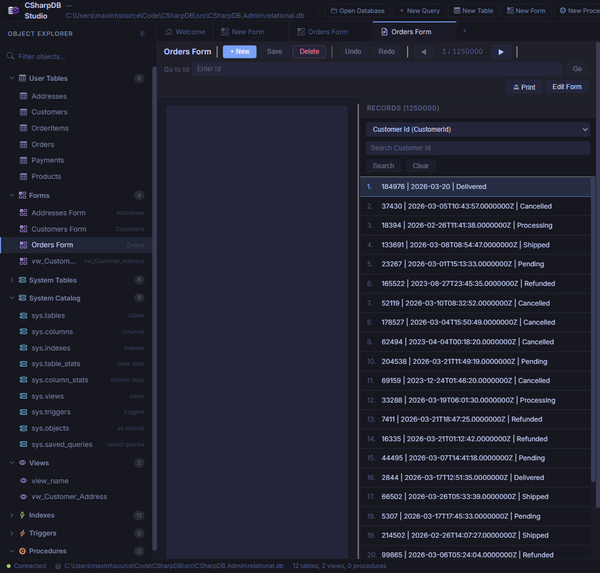
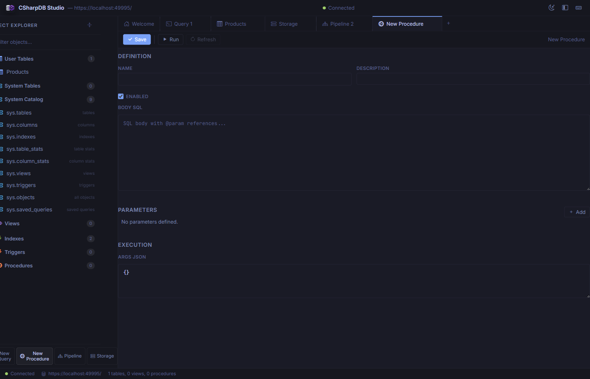
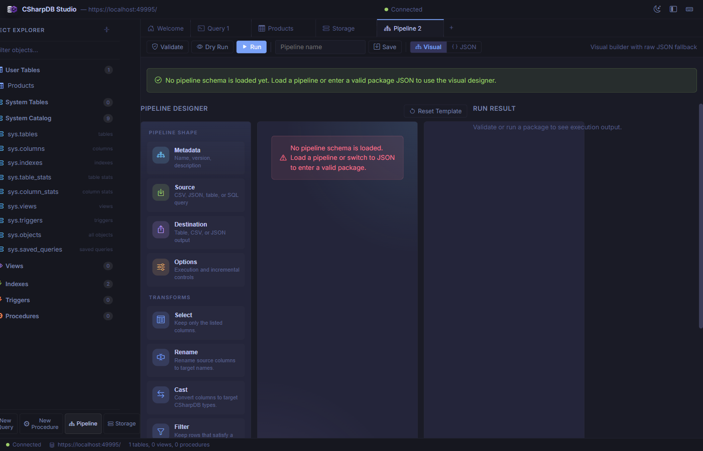
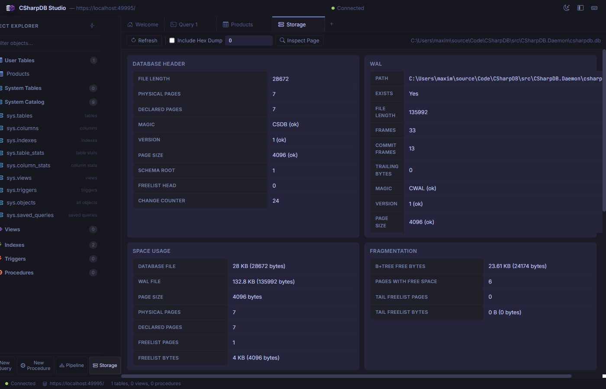

Admin UI Guide
CSharpDB Studio is a full-featured, browser-based admin interface built with Blazor Server. Connect to any CSharpDB instance — local or remote — to browse data, run queries, manage schemas, design ETL pipelines, and inspect low-level storage.

The welcome screen shows the Object Explorer, keyboard shortcuts, and connection status.
Getting Started
Launch with the Daemon (recommended)
The easiest way to start the admin UI alongside the database daemon is with the bundled PowerShell script:
powershell -ExecutionPolicy Bypass -File .\scripts\Start-CSharpDbAdminAndDaemon.ps1 -OpenAdminThis configures gRPC transport, starts the daemon, waits for it to accept connections, then launches the admin site and opens it in your default browser.
Launch Standalone
If you want to run the admin site by itself (using an embedded local database), run it directly:
cd src/CSharpDB.Admin
dotnet runThe admin UI listens on https://localhost:61816 by default. The connection endpoint and transport are configured in appsettings.json.
Transport Options
| Transport | Config Value | Use Case |
|---|---|---|
| Direct | direct | Embedded, in-process access (default for standalone) |
| gRPC | grpc | Connect to a remote daemon over gRPC (recommended for production) |
| HTTP | http | Connect to the REST API |
| Named Pipes | namedpipes | Same-machine IPC |
Interface Overview
The Studio interface has four main areas:
-
Title BarShows the CSharpDB logo, connected endpoint URL, connection status indicator, and theme / layout toggle buttons.
-
Object Explorer (Sidebar)Tree view of User Tables, System Tables, System Catalog, Views, Indexes, Triggers, and Procedures. Includes a filter search box and quick-action buttons.
-
Tab Bar & Content AreaMulti-tab workspace. Open as many query, table, form, storage, pipeline, and procedure tabs as you need. Tabs can be closed individually.
-
Status BarDisplays connection state, server endpoint, and a summary of database objects (table, view, and procedure counts).
Query Editor
Open a new query tab from the sidebar (New Query button) or press Ctrl+N. The query editor provides a full SQL editing experience with syntax highlighting.

Writing and executing a SELECT query with results displayed in a sortable grid.
Toolbar Actions
| Button | Description |
|---|---|
| Run | Execute the query and display results in the grid below. Shows row count and elapsed time. |
| Analyze | Show the query execution plan without running the query. |
| Clear | Clear the editor and results. |
| Format | Auto-format and indent the SQL in the editor. |
| SQL / Designer | Toggle between raw SQL mode and the visual query designer. |
Stats Panel
Below the toolbar, the Stats section provides access to Table Stats and Column Stats buttons that show detailed statistics for the tables referenced in your query.
Saved Queries
Name your query in the Saved section and click Save to persist it. Use the dropdown to reload any previously saved query. Saved queries are stored in the sys.saved_queries system catalog.
Data Browser
Click any table in the Object Explorer to open it in a dedicated Data tab. The data browser shows all rows in a paginated, sortable, editable grid.

Browsing the Products table with typed column headers and per-column filter inputs.
Features
- Column headers display the column name, data type badge (
INTEGER,TEXT,REAL), and a primary key indicator. - Per-column filter inputs let you narrow down rows by typing a filter value into the row beneath the header.
- Click a column header to sort ascending/descending.
- Add Row inserts a new empty row at the bottom for inline editing.
- Delete Rows removes selected rows (click row numbers to select).
- Save / Discard commits or reverts pending edits.
- Pagination controls at the bottom let you choose 10, 25, 50, or 100 rows per page.
Schema Manager
While viewing a table, switch to the Schema view to inspect and modify the table structure.

Schema view showing columns, types, constraints, and forms for creating indexes and triggers.
Sections
- Columns — Lists every column with its name, data type, primary key status, identity flag, and nullability.
- Alter Table — Expandable section for adding or dropping columns.
- Indexes — Shows existing indexes and provides a form to create new ones (with optional
UNIQUEconstraint). - Triggers — Lists existing triggers and provides a form to create
BEFORE/AFTERtriggers onINSERT,UPDATE, orDELETEevents.
Forms Designer
Create data-entry forms bound to any table or view. Click New Form in the toolbar or open an existing form from the Forms section of the Object Explorer.

The visual form designer with control toolbox, design canvas, layers panel, and property inspector.
Designer Layout
The designer uses a three-panel layout:
- Toolbox & Layers (left) — Drag controls onto the canvas from categorised groups: Layout (Label), Input Controls (Text, Textarea, Number, Date, Checkbox, Radio, Select, Lookup, Computed), and Data (DataGrid, Child Tabs). The Layers panel shows all controls with drag-to-reorder and type icons.
- Design Canvas (centre) — WYSIWYG surface with absolute positioning, grid snapping, marquee multi-select, and real-time preview rendering. Tab-order badges overlay each control.
- Property Inspector (right) — Edit control type, position/size, data binding (field + mode), control-specific properties (placeholder, min/max, formula, options), validation overrides, and z-order arrangement.
Toolbar
| Action | Description |
|---|---|
| Save | Persist the form definition to the __forms metadata table. |
| Undo / Redo | Step through the full edit history. |
| Delete / Copy / Paste / Duplicate | Clipboard and removal operations for selected controls. |
| Tab Order | Toggle tab-order badge visibility on the canvas. |
| Mobile / Tablet / Desktop | Switch responsive breakpoints (375 px, 768 px, 1200 px) with per-breakpoint positioning. |
| Data Entry | Open the runtime data-entry view for this form. |
Control Types
| Control | Description |
|---|---|
| Label | Static text display. |
| Text / Textarea | Single-line or multi-line text input with optional placeholder, maxLength, and regex pattern. |
| Number | Numeric input with optional min/max validation. |
| Date | Date picker. |
| Checkbox / Radio | Boolean toggle or radio group with coercion for text- and integer-backed boolean values. |
| Select | Dropdown with static options. |
| Lookup | Dropdown populated from another table (foreign-key driven). |
| Computed | Read-only field with formula evaluation (=Quantity * Price) and child-table aggregates (=SUM(Items.Total)). |
| DataGrid | Inline child-table editing with add/edit/delete permissions and FK mapping. |
| Child Tabs | Tabbed interface for multiple child tables with nesting support. |
Form Data Entry
Click Data Entry in the designer toolbar or open a form from the Object Explorer to enter the runtime data-entry view.

Runtime data entry showing the rendered form, record navigation, search, and paginated record list.
Features
- Record navigation — Previous / Next buttons with a Go to [PK] field for direct primary-key lookup.
- New / Save / Delete — Full CRUD lifecycle for the bound table (disabled for read-only view sources).
- Undo / Redo — Record-level change tracking before committing.
- Record list (right pane) — Paginated, searchable list of all records. Pick a column and type to filter, then click a row to navigate.
- Print — Render the current record for printing.
- Edit Form — Jump back to the designer to modify the layout.
- Validation — Rules inferred from schema (required, maxLength, range, regex, enum) with per-control overrides. Errors display inline next to affected fields.
Reports Designer
Create printable, banded reports from any table, view, or saved query. Open the reports designer from the Reports section of the Object Explorer or click New Report in the toolbar.
Designer Layout
The report designer uses a multi-panel layout:
- Toolbox (left) — Drag controls onto report bands: Label, BoundText, CalculatedText, Line, and Box.
- Groups & Sorts (left) — Define data grouping with ascending/descending sort direction and custom sort order on any field.
- Page Settings (left) — Configure paper size (Letter / A4), orientation (Portrait / Landscape), and margins.
- Design Canvas (centre) — WYSIWYG surface with drag-and-drop positioning, resize handles, and selection highlighting.
- Property Inspector (right) — Edit position, size, data binding, format strings, font size, weight, alignment, and z-order for the selected control.
Report Bands
| Band | Description |
|---|---|
| Report Header | Appears once at the start of the report. |
| Page Header | Repeats at the top of each page. |
| Group Header | Repeats for each group break. |
| Detail | Repeats for every data row. |
| Group Footer | Repeats at the end of each group. |
| Page Footer | Repeats at the bottom of each page. |
| Report Footer | Appears once at the end of the report. |
Expressions & Aggregates
CalculatedText controls support expressions with field references, arithmetic operators, and aggregate functions:
- Field references —
[FieldName]or simple identifiers - Arithmetic —
=Price * Qty - Aggregates —
=SUM(Total),=COUNT(Id),=AVG(Price),=MIN(Date),=MAX(Amount) - Special —
=PageNumber,=PrintDate
Preview & Print
Click Preview to render the report with live data. The preview shows paginated output with page navigation and supports browser printing. Reports are limited to 10,000 rows and 250 pages in preview mode.
Stored Procedures
Create and manage stored procedures from the New Procedure button in the sidebar or by clicking an existing procedure in the Object Explorer.

The procedure editor with definition, parameters, and execution sections.
Sections
- Definition — Set the procedure name, description, enabled state, and SQL body with
@paramreferences. - Parameters — Define typed input parameters that map to
@paramplaceholders in the body. - Execution — Provide a JSON object of argument values and click Run to test the procedure immediately.
Pipeline Designer
The Pipeline tab provides a visual ETL pipeline builder. Design data flows from source to destination with optional transforms — all without writing JSON by hand.

The visual pipeline designer with shape palette, transform toolbox, and run result panel.
Pipeline Shape
Every pipeline has four core sections configured through the left panel:
- Metadata — Pipeline name, version, and description.
- Source — Choose from CSV file, JSON file, database table, or raw SQL query as input.
- Destination — Output to a table, CSV file, or JSON file.
- Options — Execution mode and incremental-load controls.
Transforms
Drag transforms from the toolbox to build a processing chain:
| Transform | Description |
|---|---|
| Select | Keep only the listed columns. |
| Rename | Rename source columns to new target names. |
| Cast | Convert columns to specific CSharpDB data types. |
| Filter | Keep rows matching a filter expression. |
| Derive | Create new computed columns from expressions. |
| Deduplicate | Remove duplicate rows by specified key columns. |
Actions
- Validate — Check the pipeline definition for errors without executing.
- Dry Run — Simulate execution without writing to the destination.
- Run — Execute the full pipeline and write results.
- Save — Persist the pipeline definition for reuse.
- Visual / JSON — Toggle between the visual builder and raw JSON editor.
Storage Diagnostics
The Storage tab gives you a deep look into the physical database file, WAL state, and B+tree internals.

Storage diagnostics showing database header, WAL status, space usage, and fragmentation metrics.
Panels
- Database Header — File length, page count, magic bytes, version, page size, schema root, freelist head, and change counter.
- WAL (Write-Ahead Log) — WAL file path, existence, length, frame count, commit frames, and integrity checks.
- Space Usage — Database and WAL file sizes, page size, physical/declared page counts, and freelist utilization.
- Fragmentation — B+tree free bytes, pages with free space, and tail freelist analysis.
- Maintenance — Reindex (by scope: all, table, or index), vacuum (with confirmation), backup/restore operations, and foreign-key retrofit migration with validate/apply preview for older databases.
- Page Type Histogram — Distribution of page types (leaf, internal, freelist, overflow).
- Index Checks — Per-index integrity validation: root OK, table OK, columns OK, reachability.
- Integrity Issues — Warnings or errors found during the latest diagnostics scan.
- Page Drill-Down — Inspect any page by ID, optionally including a hex dump.